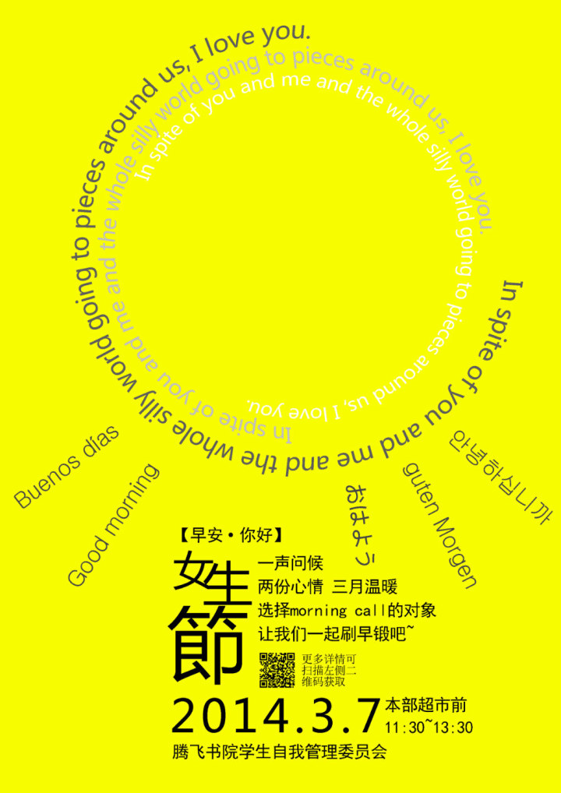

My Posters
I was a poster maker when I studied at Fudan University. It is an essential experience for me, and thus, I choose Computer Vision as my research field.
1 / 14
2 / 14
3 / 14
4 / 14

❮
❯
Copyright © 2017 Zhedong Zheng